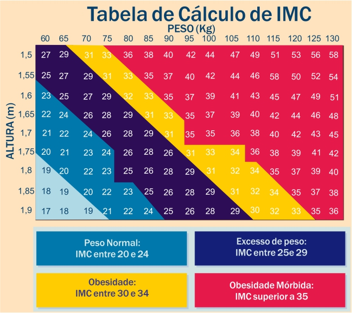

| O que é IMC |
O Índice de Massa Corporal, conhecido pela sigla IMC, criado no século 19 pelo matemático Lambert Quételet, é um cálculo simples que permite medir se alguém está ou não com o peso ideal. Ele aponta se o peso está adequado ou se está abaixo ou acima do peso.
Como Calcular |
Tabela IMC |
